Dominating the horizon as an eternal, silent sentinel, Mt. Orbis—the Slumbering Mountain—stands as a breathtaking monument of faith and architectural ambition, housing the single largest structure ever built in this echo of Orbis.
Mt. Orbis
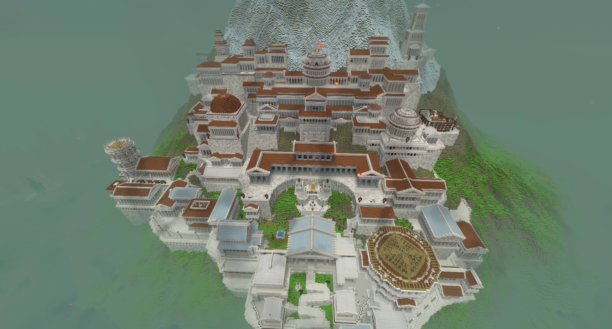
| Location Information | |
|---|---|
| Coordinates | X: 617, Z: 787 |
| Area Type | Rural Ruins |
| Mob Threat | Very High |
| Bandit Threat | High |
| Number of Chests | 19 |
| Water Source | Yes |
| Clean Water Source | No |
| Fireplace | No |
| Chef's Stove | No |
| Workbench | No |
| Available Loot | ||
|---|---|---|
| 🍎 Food | ✗ | |
| 🥛 Civilian | Tier 1 | ✗ | |
| ✂️ Civilian | Tier 2 | ✗ | |
| 🛠️ Civilian | Tier 3 | 4 | |
| 🛡️ Military | Tier 1 | ✗ | |
| ⚔️ Military | Tier 2 | 4 | |
| 🏹 Military | Tier 3 | 11 | |
| 🌟 Legendary | ✔ | |
Lore
Dominating the horizon as an eternal, silent sentinel, Mt. Orbis—the Slumbering Mountain—stands as a breathtaking monument of faith and architectural ambition, housing the single largest structure ever built in this echo of Orbis.
The Colossus of the South
For centuries, the peoples of this realm poured their wealth, labor, and devotion into shaping Mt. Orbis. The mountain itself is enveloped by a sprawling temple complex that crawls across all its sides and penetrates deep into its hollowed-out core. However, the true marvel of this construction is concentrated on the south side. Here, the structure rises in towering, majestic tiers of pristine stone and soaring arches, specifically engineered to look impossibly grand to anyone approaching from the southern plains.
This superb construction was a work of generations, continuously expanded and added onto for hundreds of years. The grand builders were still raising new pillars and carving out new chambers when the catastrophic undead plague suddenly swept across the land, bringing an abrupt and permanent halt to the greatest architectural undertaking in history.
The Holy Cradle of Gaia
Throughout the sacred halls of Mt. Orbis, one find constant, reverent references to Gaia, the earth mother. The air inside the mountain carries a heavy, spiritual tranquility that makes the entire peak feel like a holy sanctuary.
According to ancient myths, Mt. Orbis is not merely a mountain, but the literal place of origin in this echo of Orbis—the cradle from which life itself was first breathed into the world. While the passage of eons and the chaos of the plague have lost much of the physical proof of this claim to time, the divine atmosphere and the sheer scale of the ruins leave little doubt of its sacred importance.
Features of the Slumbering Mountain
- The South Facade, a breathtaking vertical city of marble, grand staircases, and towering spires that covers the entire southern face.
- The Inner Sanctum, a cavernous, holy interior decorated with ancient shrines and iconography dedicated to Gaia.
- The Frozen Scaffolding, silent cranes and half-carved pillars that stand frozen in time, marking the exact day the plague took over.
- An extensive network of subterranean tunnels running deep beneath the mountain, rumored to hold the earliest secrets of the echo.
Present Day
Today, the largest building in the echo of Orbis has transformed into a massive, silent necropolis. The very halls meant to celebrate the origins of life are now overrun by the relentless forces of the undead. Because the sanctuary was in the middle of active expansion when it fell, players exploring its depths will find a chaotic maze of completed holy chambers and half-constructed scaffolding. The sheer scale of the monument makes it a premier destination for explorers, offering peerless panoramic views from its southern peaks and highly coveted relics of Gaia hidden deep within its unmapped depths.
Gaze upon the majestic south face of Mt. Orbis and behold the pinnacle of mortal ambition. But as you climb its ancient steps, tread softly—for the cradle of life now serves as a fortress for the dead.
Gallery
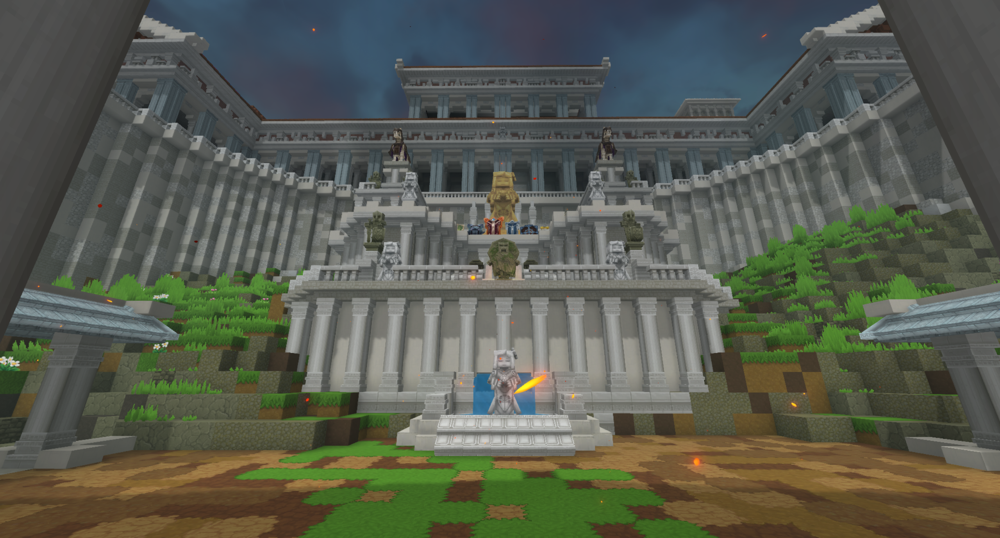
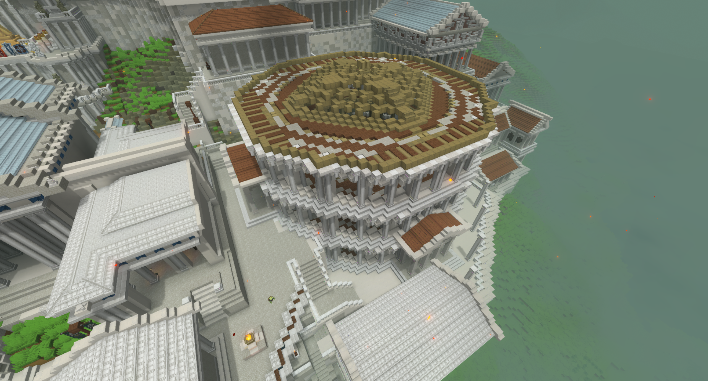
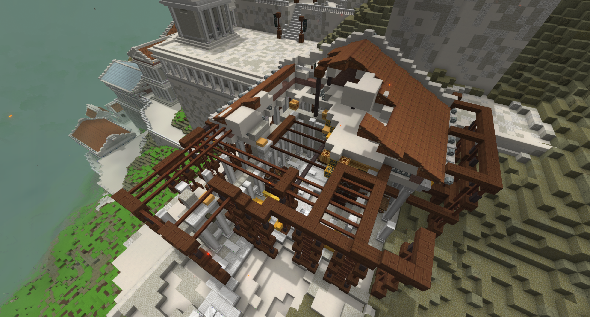
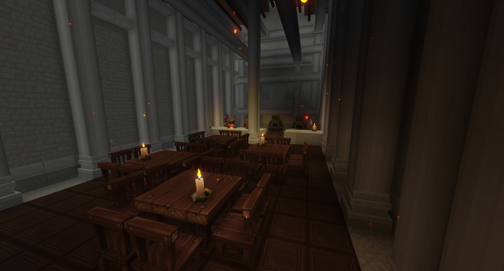
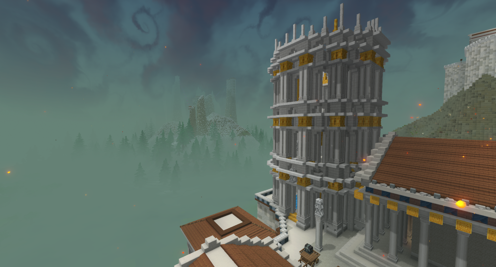
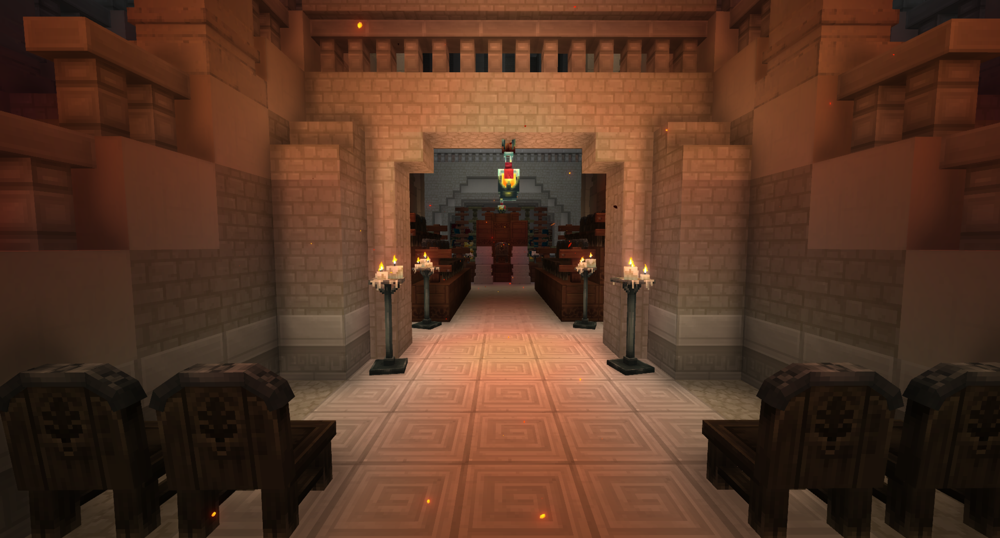
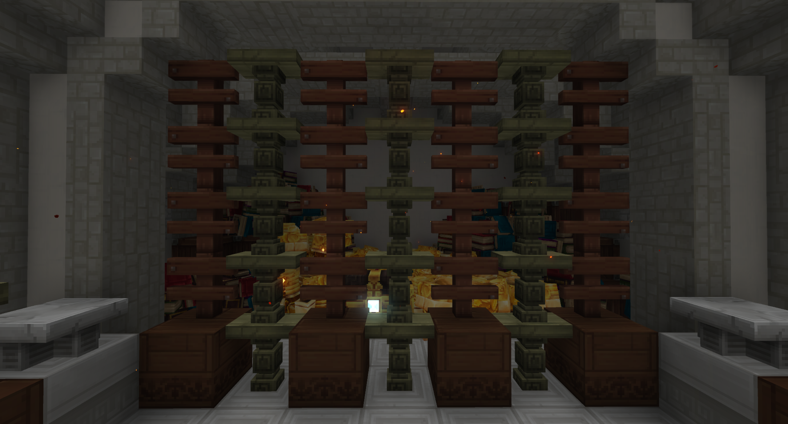
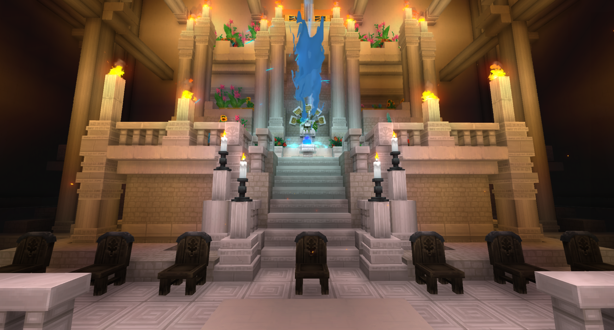
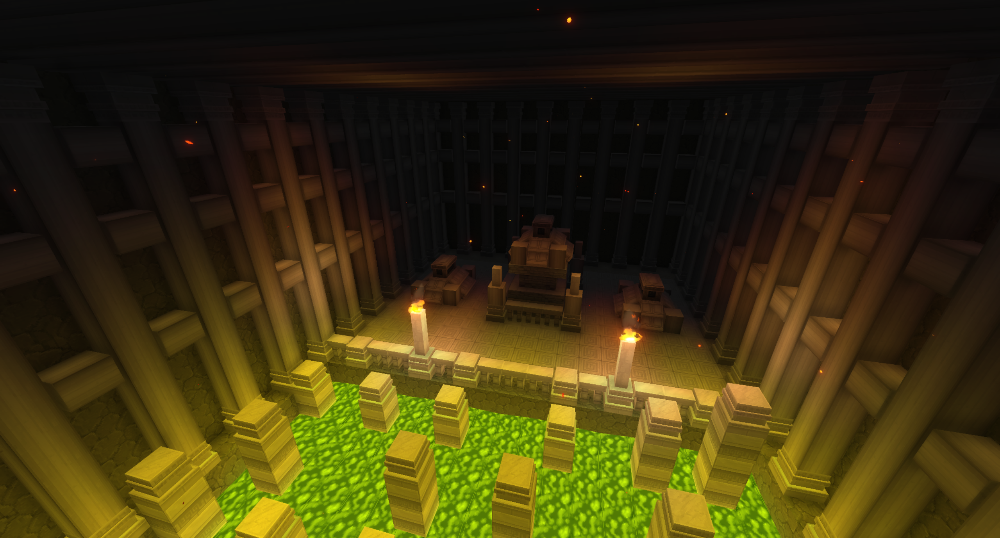
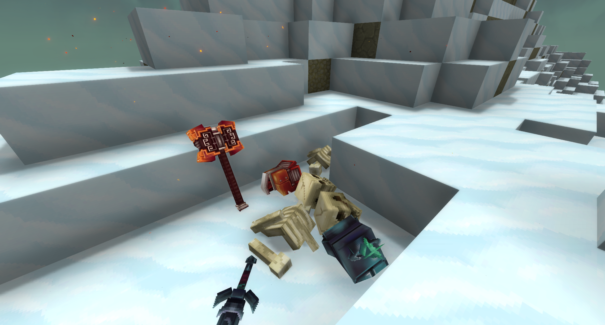
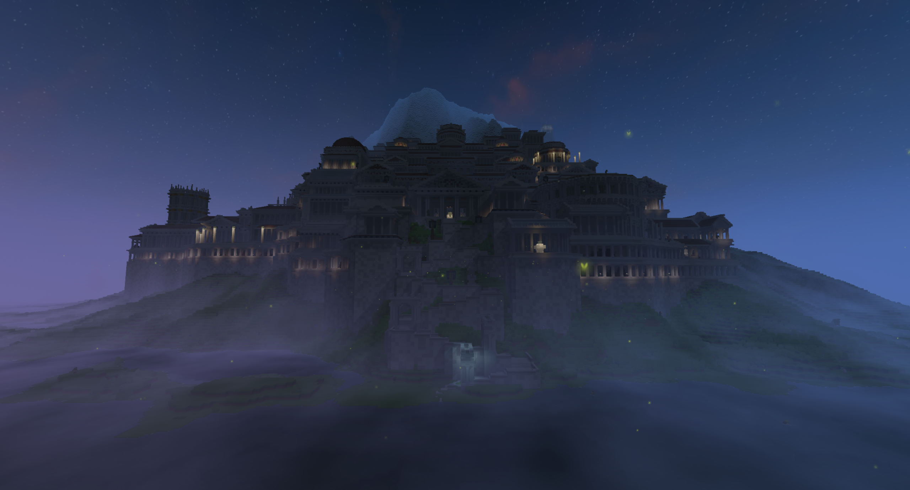